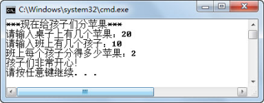
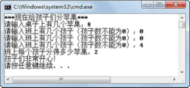

1.1 异常概述
在程序运行过程中，经常会出现一些意外的情况，这些意外会导致程序出错或者崩溃，从而影响程序的正常执行，如果不能很好地处理这些意外情况，程序的稳定性就会受到质疑。在Java语言中，将这些程序意外称为异常，出现异常时的处理称为异常处理，合理的异常处理可以使整个项目更加稳定，也可以使项目中正常的逻辑代码和错误处理的代码实现分离，便于代码的阅读和维护。
1.1.1 异常引入
让我们来看下面的一段程序，运行程序，其运行结果如图1.1所示。
public class TestEx
{
public static void main(String[] args)
{
String teachers[]={"柳海龙","孙传杰","孙悦"};
for(int i=0;i<4;i++){
System.out.println(teachers[i]);
}
System.out.println("显示完毕！");
}
}

图1.1 异常引入
程序出错的原因很简单，程序员定义的数组长度是3，而在使用数组时，却访问了下标为3的第4个数组元素，所以程序出现异常。
让我们再看一个程序：
1
import java.util.Scanner;
public class TestEx2
{
public static void main(String[] args)
{
int appleNum = 0; //苹果数
int stuNum = 0; //学生数
System.out.println("***现在给孩子们分苹果***");
Scanner input = new Scanner(System.in);
System.out.print("请输入桌子上有几个苹果：");
appleNum = input.nextInt();
System.out.print("请输入班上有几个孩子：");
stuNum = input.nextInt();
System.out.println("班上每个孩子分得多少苹果：" + appleNum/stuNum);
System.out.println("孩子们非常开心！");
}
}
运行程序，分两次输入如下数值，程序运行结果如图1.2和图1.3所示。

图1.2 异常引入

图1.3 异常引入
如图1.2所示，把20个苹果分给10个孩子，每个孩子得到2个苹果。但是如果在输入的过程中，用户不小心在输入班上孩子数时，输入值为0，则出现了如图1.3所示的异常，程序运行结束。
如何解决上面的两个问题呢？
第一个案例解决方法很简单，在for循环的时候，将第二个表达式由“i < 4”改成“i < teachers. length”即可，这样通过数组的长度控制了循环的次数，保证不会出现数组下标越界的问题。
第二个案例的解决代码如下：
import java.util.Scanner;
public class TestEx4
{
public static void main(String[] args)
{
int appleNum = 0; //苹果数
int stuNum = 0; //学生数
System.out.println("***现在给孩子们分苹果***");
Scanner input = new Scanner(System.in);
System.out.print("请输入桌子上有几个苹果：");
appleNum = input.nextInt();
while( stuNum == 0) //如果输入孩子数为0，则要求用户再次输入
{
System.out.print("请输入班上有几个孩子（孩子数不能为0）：");
stuNum = input.nextInt();
}
System.out.println("班上每个孩子分得多少苹果：" + appleNum/stuNum);
System.out.println("孩子们非常开心！");
}
}
在修改后的代码中，采用了while循环的方式进行判断，如果用户输入的孩子数为0，则要求用户继续输入，通过这种方式，解决了除数为0的异常的产生，程序运行结果如图1.4所示。

图1.4 异常引入
采用判断语句的方式进行异常的处理，首先需要意识到哪些地方可能出现异常，在可能出现异常的地方加入判断语句和处理代码。这种处理方式对程序员的要求高，而且代码量大，程序结构混乱。
1.1.2 异常分类
想要知道异常的分类，了解Java异常的继承关系，首先了解Java异常的层次结构，如图1.5所示。
Throwable，所有异常都继承自java.lang.Throwable类，Throwable类有两个直接子类，Error类和Exception类。
Error类是Throwable类的子类，是Java应用程序本身无法恢复的严重错误，应用程序不需要捕获、处理这些严重错误。当程序发生这种严重错误时，通常的做法是通知用户并中止程序的执行。

图1.5 Java异常层次结构图
Exception、Error表示Java应用程序本身无法恢复的严重错误，而不是这种Java应用程序无法恢复的严重错误，我们称之为异常。异常可分为运行时异常（RuntimeException）和检查时异常（CheckedException）两种。
RuntimeException，运行时异常即程序运行时抛出的异常，不要求程序员在编程时必须对这些异常进行处理，也能编译通过。前面数组下标越界异常和除数为0的异常都是运行时异常。
CheckedException，检查时异常又称为非运行时异常，这样的异常要求程序员必须在编程时进行处理，否则就会编译不通过。例如，在前面的学习过程中，经常在编译的时候发生类找不到的情况，这就是一个典型的检查时异常。